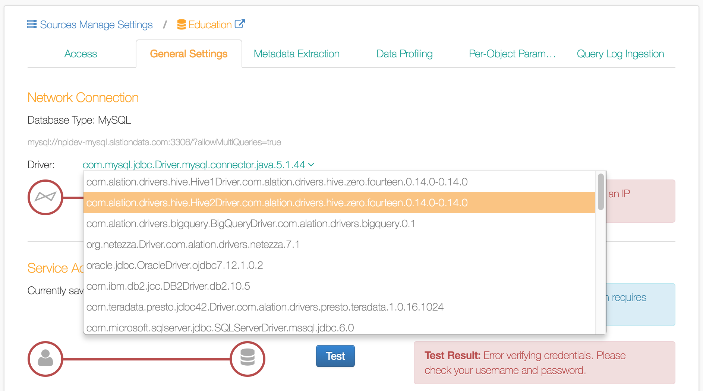
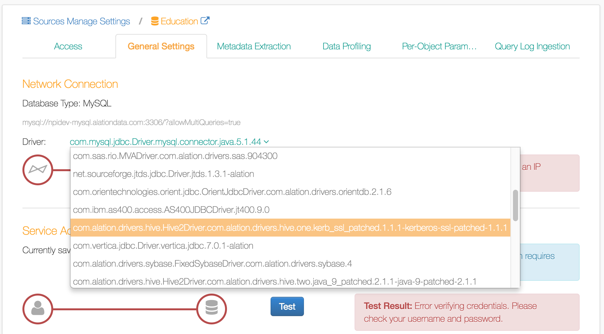

Release-specific Update Pre-checks¶
Customer Managed Applies to customer-managed instances of Alation
Updating Alation from versions between
4.8.x and V R1 (5.0.x)
to higher versions through V R4 (5.8.x)
Use this instruction to check for update readiness if you are going to update from a version between 4.8.x or V R1 (5.0.x) to V R2 (5.6.x) or higher. Do the following pre-checks:
Step 1. Licensing¶
Versions 4.10.x and above require a valid license to be placed on the filesystem to update.
Obtain your license file from Customer Portal.
Put the license file
alation_license.licon your Alation server at/opt/alation/alation_license.lic. Note that this location is outside of Alation chroot.Follow the appropriate update instructions.
Step 2. MongoDB Size Check¶
Before updating, you must provide sufficient free disk space. We recommend providing at least twice the current size of MongoDB on the disk. In product versions before V R2 (5.4.x), “MongoDB” is the internal part of Alation for collecting backend server data.
The updater will automatically exit early with a warning if you do not have the required free disk space available.
Note
This disk space requirement exists because in VR2 the Alation server is migrating off MongoDB. Starting from V R2, the data stored in MongoDB will be gradually copied over to a PostgreSQL database. In a future release, MongoDB will be completely removed. Until this removal is complete, extra space is required for both copies of the data.
How to validate you have enough disk space¶
Go to your data drive (usually at
/data) and run the following command to see how much disk space is used by MongoDB:du -k --max-depth=0 -h ./mongo
Double this number: it is the free space needed for updating.
Check how much free space exists. On the host, outside the Alation chroot, run:
df -h
The output will show the used and available disk space for the
disks. Find the main data disk. It is usually called /data .
Find the number in the Avail column: this should be more than
the space needed that you have calculated in Step 2.
Updater quits with Install Aborted¶
If updater quits with the Install Aborted error, you can either:
Free the required disk space and try the update again.
Follow the instructions in the update warning to ignore the disk space check. The updater checks for at least two times the size of MongoDB of free disk space, which is conservative. You can proceed with less, but we recommend you monitor the disk space for a few weeks after the update.
Step 3. Custom Drivers Check¶
After updating your staging server, you will need to verify that your custom drivers work in VR2 (or higher version).
How to know if you used a custom driver? Before updating, check if you have used any custom drivers.
In versions below V R2, it was possible to use custom drivers by placing them in the Alation backend server to connect to some databases. You can check if you have ever placed a driver into the backend by running the following command from inside the Alation chroot :
ls /opt/alation/site/site_data/pre_added_jars/
If this directory is empty you can skip this section.
If not, and you find files there, it is possible that you are using custom drivers in your instance. In Alation, find the Data Sources which use these custom drivers and use the steps below to continue using them after the update. The custom drivers will have to be relocated to a different directory after the update.
To continue using custom drivers after updating Alation,
Update your staging server.
Copy the custom drivers you located in
/pre_added_jarsto a new location inside the chroot:/opt/alation/site/site_data/custom_drivers/.Restart the Taskserver and Connector:
alation_supervisor restart java:taskserver alation_supervisor restart java:connector
In Alation, for the Data Sources which should use these custom drivers, select the correct driver on the**Network Connection** > Data Source Settings > General Settings tab. Confirm that the network connection works and run metadata extraction, a Compose query and a table profile (if you use them).
Note
To open General Settings of a Data Source,
In Alation, on the main toolbar, click Sources . The Sources page will open.
Click Manage Settings, then click the name of your Data Source. The corresponding Data Source page will open.
Alternatively, you can use left-hand navigation to find the Data Source you need.
In the upper-right corner, click More then click Settings to open the Data Source settings page.
Click General Settings tab to open it.
Data Source Settings > General Settings > Network Connection: selecting a driver
{kind=link}
If the driver does not appear in UI after you relocated it, confirm you have placed it in the correct folder as described above and restarted the required processes.
Step 4. Kerberos Configuration Check¶
If you do not use any Data Sources with Kerberos authentication, you can skip this section. Even if you do use Kerberos there is a good chance everything will work, and you can skip this section. If you experience a problem connecting to your Kerberos authenticated data source after the update, refer to this section for details on how you may fix it.
Alation V R2 (and higher) uses a newer version of Java (Java 9) which
introduced a bug fix that causes the renew_lifetime parameter in
Kerberos configuration file /etc/krb5.conf to be respected. This
means that if this parameter had been previously improperly configured,
it would not have mattered because it was ignored. Now, after the update
to VR2 (or higher), the authentication using Kerberos may fail. This will
result in a “Message Stream Modified” error in Taskserver and Connector.
If you experience this problem after updating, we recommend you remove
the renew_lifetime parameter from the /etc/krb5.conf files.
To remove the parameter,
Enter the Alation Shell:
sudo service alation shell
Remove the
renew_lifetimeparameter from/etc/krb5.conf.Run the following commands to apply the changes:
alation_action copy_krb5_conf alation_supervisor restart java:*
Connect to your Kerberos-authenticated databases from Alation to verify the connection works.
Step 5. Hive with Kerberos over SSL Check¶
If you do not use a Data Source with this configuration you can skip this section.
You will need to perform a few steps to continue using your Hive Data Source that authenticates with Kerberos over SSL. Follow these steps after upgrading.
Go to the General Settings page for your Data Source.
Under Network Connection, find the Driver dropdown menu.
Click Driver, and find and select a drive named
com.alation.drivers.hive.Hive2Driver.com.alation.drivers.hive.one.1.1.1-1.1.1-kerberos-ssl-patched.Test the Service Account section.
Test running a Compose query.
Test metadata extraction.
Note
To open General Settings of a Data Source,
In Alation, on the main toolbar, click Sources . The Sources page will open.
Click Manage Settings, then click the name of your Data Source. The corresponding Data Source page will open.
Alternatively, you can use left-hand navigation to find the Data Source you need.
In the upper-right corner, click More then click Settings to open the Data Source settings page.
Click General Settings tab to open it.
Data Source Settings > General Settings > Network Connection: selecting the Kerberos over SSL driver
{kind=link}
Step 6. Non-Default Hive Driver (1.1.1 or 2.1.0) Check¶
Read this section if you are using Hive Data Sources with custom drivers (not provided by Alation). If you do not use any Hive Data Sources or you are confident you have not changed the Hive driver version that Alation uses by default, you can skip this section.
In your instance, you may have changed the default Hive driver version
by changing the parameter supervisor.shims.hive_version in alation_conf file.
Before updating, check the value of supervisor.shims.hive_version in alation_conf . If its
value is not 0.14.0 (default), but is 1.1.1, 2.1.0, or
other, you will need to take the following action after
updating:
In Alation, navigate to the General Settings tab of your Hive Data Source Settings page.
Under Network Connections, in the Driver list, find and select the appropriate driver that matches your current setting of
supervisor.shims.hive_version.
Backup Reminder¶
Alation runs backups automatically on a nightly basis; we strongly recommend verifying that your backups are running correctly before updating your system. The best way to validate a backup is to perform a full restore on a separate system.
To follow an even safer update best practice, if your infrastructure allows for the creation of a complete system snapshot/image, create one before installing the update. Make sure that the image restore process is tested at least once on a test server. After a successful update, you can delete this image.